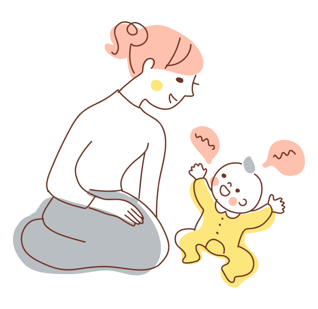
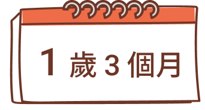
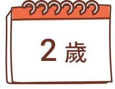
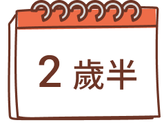
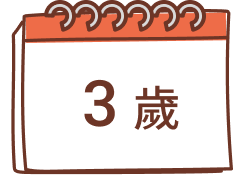

根據世界衛生組織（WHO）統計，兒童發展遲緩約佔 6 ～ 8 ％，而3 歲前是大腦快速發展的黃金期，若能及早發現並接受療育，多數孩子便能追上同齡進度。
每個孩子都是獨特的生命起點，蘊藏著無限的發展潛能。發展遲緩的原因複雜多元，許多情況是源於後天環境刺激不足。只要能及早接受專家建議，調整生活模式與親子互動方式，就能為孩子帶來顯著的改善與轉機。
用愛灌溉、及早介入，
讓每個孩子都能順利發展
2 歲半的妮妮不會自己拿湯匙吃飯，精細動作明顯落後同齡孩子，媽媽困惑地問醫師：「她已經可以自己吃飯了嗎？」這樣的場景，在兒科門診並不陌生。
0～3 歲是大腦發展的黃金關鍵期，儘早發現、及早介入，是孩子跨越發展挑戰的最佳方法。
家長對兒童發展
有哪些錯誤認知？
有哪些錯誤認知？
從發現到療育，台灣家庭
必須理解的3個關鍵訊息
必須理解的3個關鍵訊息
關鍵1
早期發現、早期介入：不是貼標籤，而是給孩子迎頭趕上的機會
很多不是先天障礙，而是後天互動不足造成，例如生活經驗不足，或家長引導方式不對等，通常只要家長稍做調整，比如多增加親子互動或共讀，孩子就能回到正常軌道上。
關鍵2
0 ~ 3 歲，大腦快速發展的黃金期
0 ~ 3 歲孩子的大腦正在施工中，像建立神經突觸連結及髓鞘化，就是兩大重要的基礎建設。但若是過度使用 3C，神經突觸連結及髓鞘化建構速度減慢或不完整，訊息傳輸就會受到影響。
互動是促使孩子神經發展的關鍵，影響孩子語言與認知差異的關鍵，不是家庭經濟地位，而是父母與孩子說話的次數與品質。
關鍵3
家庭是孩子最重要的療育場所
幼兒最好的學習場域是家庭，3 歲以前是孩童語言快速發展的黃金期，即「詞彙爆發期」，孩子開始懂得大量詞彙，並能說單詞表達，進步到能夠語句對答，而家庭是最自然，且能經常練習說話的地方。
0 ～ 3 歲是孩子生命裡最神奇的三年，這 3 年奠定了語言、動作、認知與情緒發展，需要陪他一起走過。
高齡、少子是當前不得不面臨的境況，面對少子化，陪伴孩子不僅是個人的事，更是對未來社會最好的投資。
延伸閱讀
0 ~ 3 歲極早療，怎麼做會更好？2025 兒童早療專家會議聚焦家庭與社區力量
0~3 歲寶寶的
39 個關鍵發展行為
39 個關鍵發展行為
本表參照國內最常用的兒童發展量表＊，並請專家增修審訂，藉此提醒家長，如果孩子到了該年齡仍未發展出以下關鍵行為，就要多注意囉！建議可諮詢相關醫療人員。
說明：
- 臺北市學齡前兒童發展檢核表（修訂版） ＊特殊加分項目
- 國健署兒童發展篩檢
PeDS 量表加權 2 分項目
審定專家
- 馬偕紀念醫院兒童展暨早期療育評估中心主任陳慧如
- 林口長庚醫院復健科職能治療師黃慶凱
- 國立台北護理健康大學語言治療與聽力學系所教授童寶娟
4個月
6個月
9個月
1歲
1歲3個月
1歲6個月
2歲
2歲半
3歲
- 1.嬰兒在趴姿下可以抬頭
- 2.嬰兒可以短暫注意抬起的雙手
- 3.面對面時能持續注視人臉，表現出對人的興趣
- 4.雙手可以張開，不會持續握拳
- 5.仰頭或靜止不動時，頭或身體的姿勢可自由轉動，不會歪向固定一側
- 6.可以玩聲音，或喃喃學語聲
- 7.可以翻身
- 8.眼睛會追視玩具，也會伸手拿
- 9.能自己坐穩，不會搖晃或跌倒
- 10.兩隻手可以同時握緊一樣東西5秒鐘以上
- 11.大人跟他玩，會發出聲音（牙牙學語） (6-9個月)
- 12.能由躺的姿勢，自己坐起來，不會搖晃或跌倒。坐、臥姿轉換自如
- 13.可以和人維持目光對視、會跟大人玩
- 14.呼喊孩子名字或小名會抬頭有反應（到2歲會有穩定反應）

- 15.能用說或比手勢，表達自己的「要」或「不要」
- 16.會在適當情況下，做出拍拍手、再見等手勢
- 17.能自己扶著家具走路（或被牽著手走）
- 18.可以用大拇指和食指相對捏起小物（如貼紙和葡萄乾大小）或積木
- 19.能放手站立至少 30 秒
- 20.可以聽懂指令並回應，如拿ＸＸ、關門、打開等
- 21.不需扶東西，就能由坐或躺的姿勢站起來
- 22.能聽懂並遵從日常生活中一半以上的的口頭指令。如過來、給我什麼等等
- 23.懂得形狀顏色配對

- 24.至少有 10 個穩定使用的詞彙（娃娃音也算）
- 25.高興時會和別人分享喜悅，如轉頭對大人微笑
- 26.能模仿做家事，或使用大多數的家用器具如掃地
- 27.可以雙腳跳
- 28.可以疊至少 2 ～ 3 塊積木（邊長 2 X 3 公分）
- 29.能用湯匙吃飯
- 30.可以回答簡單句

- 31.可以畫直線、橫線或塗鴉
- 32.會旋開小瓶蓋
- 33.可以一頁一頁的翻閱硬卡書或布書
- 34.能扶欄杆或牆壁上樓梯
- 35.能正確指出至少 6 個身體部位，如頭腳在哪裡等。可以說出雙字詞，如蘋果。
- 36.可以拼 2 片拼圖

- 37.可以至少用「動詞+名詞」 組合的片語敘述，例如: 「洗手(玩水)、踢足球、拿 杯子、喝水、拍手」(至少答對三題)
- 38.可以自己稍微扶著欄杆，放手走上樓梯（不需他人扶）
- 39.玩遊戲時會有假扮的玩法，例如餵娃娃喝水
延伸閱讀
更多兒童發展、早期療育相關文章，
陪您一起了解、探索孩子的發展
陪您一起了解、探索孩子的發展
合作夥伴